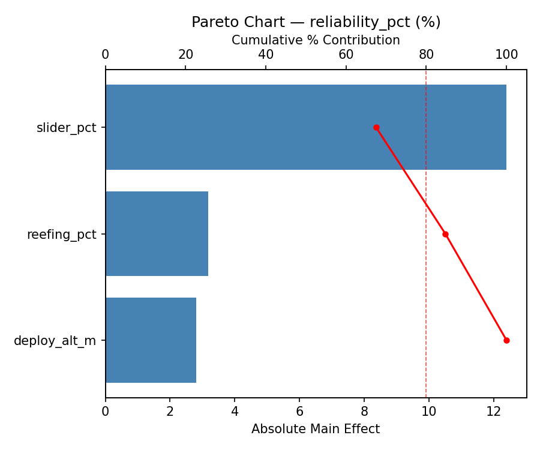
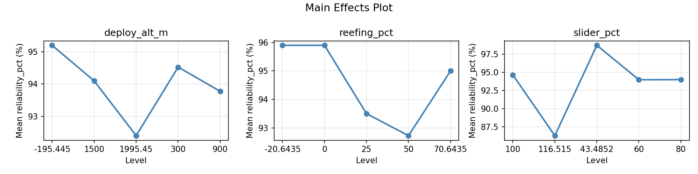
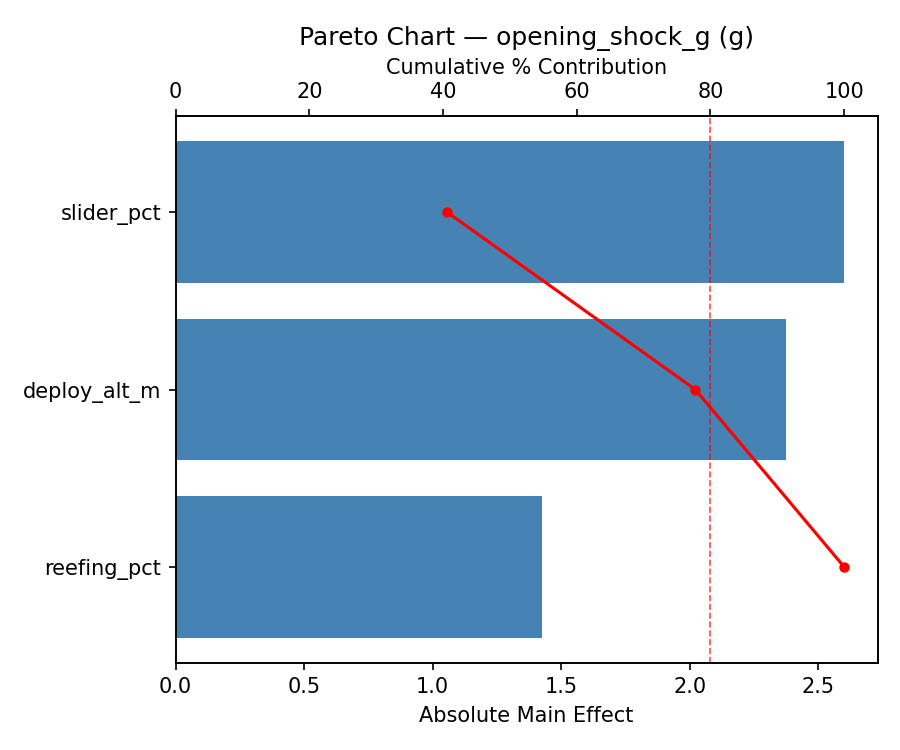
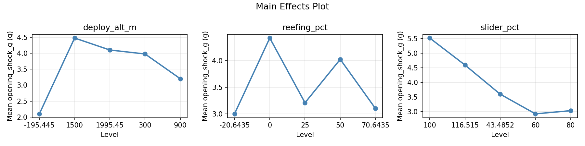
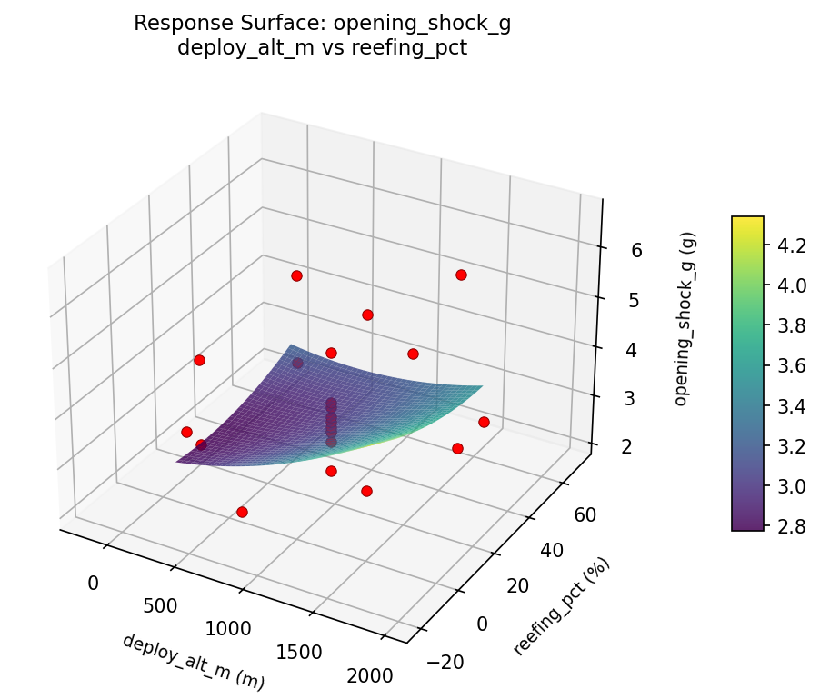
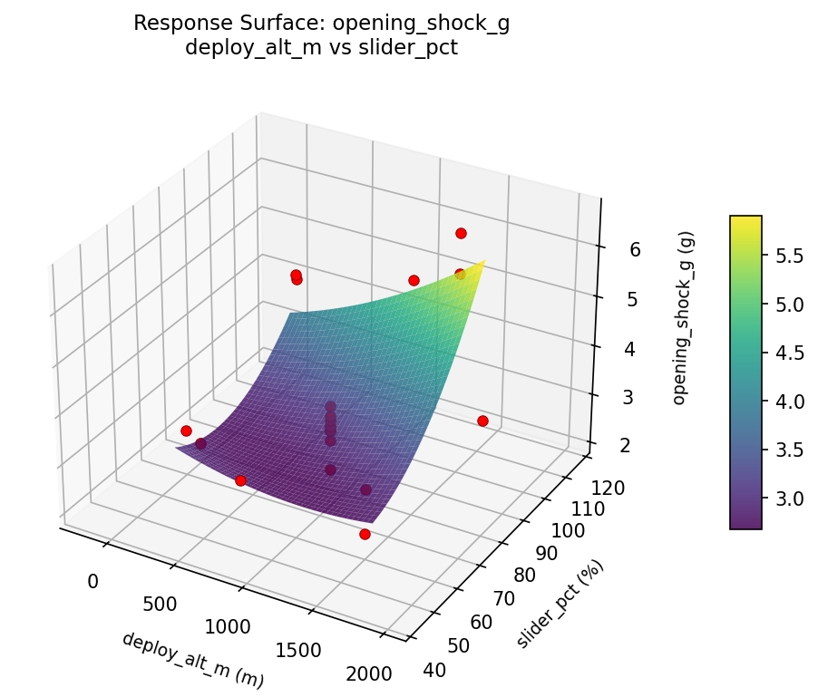
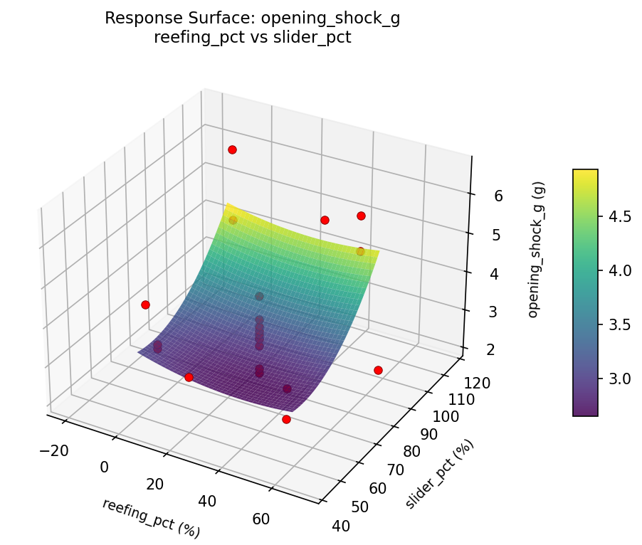
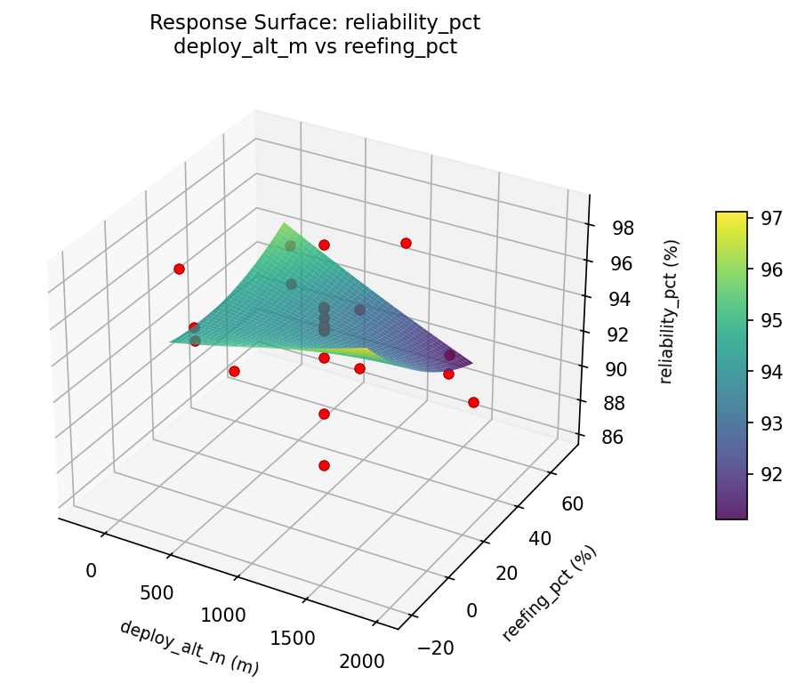
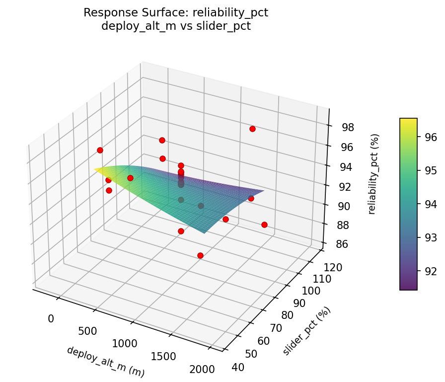
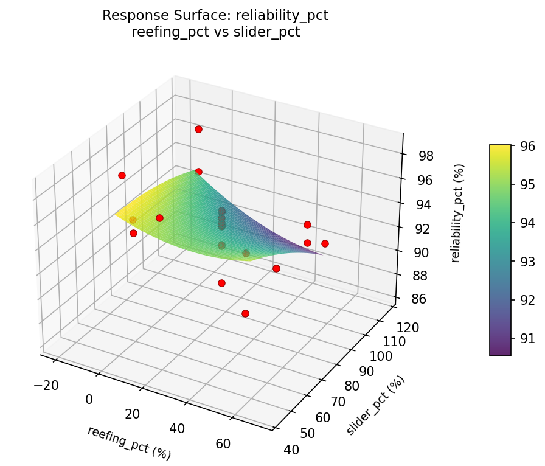

Summary
This experiment investigates parachute deployment dynamics. Central composite design to maximize opening reliability and minimize opening shock by tuning deployment altitude, reefing ratio, and slider size.
The design varies 3 factors: deploy alt m (m), ranging from 300 to 1500, reefing pct (%), ranging from 0 to 50, and slider pct (%), ranging from 60 to 100. The goal is to optimize 2 responses: reliability pct (%) (maximize) and opening shock g (g) (minimize). Fixed conditions held constant across all runs include canopy = ram_air, load = 90kg.
A Central Composite Design (CCD) was selected to fit a full quadratic response surface model, including curvature and interaction effects. With 3 factors this produces 22 runs including center points and axial (star) points that extend beyond the factorial range.
Quadratic response surface models were fitted to capture potential curvature and factor interactions. The RSM contour plots below visualize how pairs of factors jointly affect each response.
Key Findings
For reliability pct, the most influential factors were slider pct (67.5%), reefing pct (17.3%), deploy alt m (15.2%). The best observed value was 98.7 (at deploy alt m = 1500, reefing pct = 0, slider pct = 60).
For opening shock g, the most influential factors were slider pct (40.6%), deploy alt m (37.1%), reefing pct (22.3%). The best observed value was 2.1 (at deploy alt m = 1500, reefing pct = 50, slider pct = 60).
Recommended Next Steps
- Run confirmation experiments at the predicted optimal settings to validate the model.
- Consider whether any fixed factors should be varied in a future study.
Experimental Setup
Factors
| Factor | Low | High | Unit |
|---|
deploy_alt_m | 300 | 1500 | m |
reefing_pct | 0 | 50 | % |
slider_pct | 60 | 100 | % |
Fixed: canopy = ram_air, load = 90kg
Responses
| Response | Direction | Unit |
|---|
reliability_pct | ↑ maximize | % |
opening_shock_g | ↓ minimize | g |
Configuration
{
"metadata": {
"name": "Parachute Deployment Dynamics",
"description": "Central composite design to maximize opening reliability and minimize opening shock by tuning deployment altitude, reefing ratio, and slider size"
},
"factors": [
{
"name": "deploy_alt_m",
"levels": [
"300",
"1500"
],
"type": "continuous",
"unit": "m"
},
{
"name": "reefing_pct",
"levels": [
"0",
"50"
],
"type": "continuous",
"unit": "%"
},
{
"name": "slider_pct",
"levels": [
"60",
"100"
],
"type": "continuous",
"unit": "%"
}
],
"fixed_factors": {
"canopy": "ram_air",
"load": "90kg"
},
"responses": [
{
"name": "reliability_pct",
"optimize": "maximize",
"unit": "%"
},
{
"name": "opening_shock_g",
"optimize": "minimize",
"unit": "g"
}
],
"settings": {
"operation": "central_composite",
"test_script": "use_cases/269_parachute_deployment/sim.sh"
}
}
Experimental Matrix
The Central Composite Design produces 22 runs. Each row is one experiment with specific factor settings.
| Run | deploy_alt_m | reefing_pct | slider_pct |
|---|
| 1 | 900 | 25 | 80 |
| 2 | 1500 | 0 | 100 |
| 3 | 300 | 50 | 60 |
| 4 | 900 | 70.6435 | 80 |
| 5 | 900 | 25 | 80 |
| 6 | -195.445 | 25 | 80 |
| 7 | 900 | 25 | 43.4852 |
| 8 | 900 | 25 | 80 |
| 9 | 1500 | 50 | 60 |
| 10 | 1995.45 | 25 | 80 |
| 11 | 900 | 25 | 80 |
| 12 | 900 | -20.6435 | 80 |
| 13 | 900 | 25 | 80 |
| 14 | 300 | 0 | 100 |
| 15 | 900 | 25 | 80 |
| 16 | 1500 | 0 | 60 |
| 17 | 900 | 25 | 116.515 |
| 18 | 1500 | 50 | 100 |
| 19 | 900 | 25 | 80 |
| 20 | 300 | 0 | 60 |
| 21 | 300 | 50 | 100 |
| 22 | 900 | 25 | 80 |
Step-by-Step Workflow
1
Preview the design
$ python doe.py info --config use_cases/269_parachute_deployment/config.json
2
Generate the runner script
$ python doe.py generate --config use_cases/269_parachute_deployment/config.json \
--output use_cases/269_parachute_deployment/results/run.sh --seed 42
3
Execute the experiments
$ bash use_cases/269_parachute_deployment/results/run.sh
4
Analyze results
$ python doe.py analyze --config use_cases/269_parachute_deployment/config.json
5
Get optimization recommendations
$ python doe.py optimize --config use_cases/269_parachute_deployment/config.json
6
Generate the HTML report
$ python doe.py report --config use_cases/269_parachute_deployment/config.json \
--output use_cases/269_parachute_deployment/results/report.html
Real-World Experiment Workflow
ℹ
Physical Aerospace Test? Use the Manual Workflow
Flight and aerospace experiments involve real aerodynamics, propulsion, and atmospheric conditions requiring physical testing. The simulation script above is for demonstration. For your real experiments, use record, status, and export-worksheet.
$ python doe.py export-worksheet --config use_cases/269_parachute_deployment/config.json \
--format csv --output worksheet.csv
$ python doe.py status --config use_cases/269_parachute_deployment/config.json
$ python doe.py record --config use_cases/269_parachute_deployment/config.json --run 1
$ python doe.py analyze --config use_cases/269_parachute_deployment/config.json --partial
$ python doe.py analyze --config use_cases/269_parachute_deployment/config.json
$ python doe.py optimize --config use_cases/269_parachute_deployment/config.json
$ python doe.py report --config use_cases/269_parachute_deployment/config.json \
--output report.html
✔
Works Without a Test Script
The analysis pipeline doesn't care how results were produced. Record your measurements with record, and the full analysis, optimization, and reporting pipeline works identically. Use --partial to get early insights before all runs are complete.
Features Exercised
| Feature | Value |
|---|
| Design type | central_composite |
| Factor types | continuous (all 3) |
| Arg style | double-dash |
| Responses | 2 (reliability_pct ↑, opening_shock_g ↓) |
| Total runs | 22 |
Analysis Results
Generated from actual experiment runs using the DOE Helper Tool.
Response: reliability_pct
Top factors: slider_pct (67.5%), reefing_pct (17.3%), deploy_alt_m (15.2%).
Pareto Chart

Main Effects Plot

Response: opening_shock_g
Top factors: slider_pct (40.6%), deploy_alt_m (37.1%), reefing_pct (22.3%).
Pareto Chart

Main Effects Plot

Response Surface Plots
3D surfaces fitted with quadratic RSM. Red dots are observed data points.
opening shock g deploy alt m vs reefing pct

opening shock g deploy alt m vs slider pct

opening shock g reefing pct vs slider pct

reliability pct deploy alt m vs reefing pct

reliability pct deploy alt m vs slider pct

reliability pct reefing pct vs slider pct

Full Analysis Output
RSM surface: rsm_reliability_pct_deploy_alt_m_vs_reefing_pct.png
RSM surface: rsm_reliability_pct_deploy_alt_m_vs_slider_pct.png
RSM surface: rsm_reliability_pct_reefing_pct_vs_slider_pct.png
RSM surface: rsm_opening_shock_g_deploy_alt_m_vs_reefing_pct.png
RSM surface: rsm_opening_shock_g_deploy_alt_m_vs_slider_pct.png
RSM surface: rsm_opening_shock_g_reefing_pct_vs_slider_pct.png
=== Main Effects: reliability_pct ===
Factor Effect Std Error % Contribution
--------------------------------------------------------------
slider_pct 12.4000 0.5926 67.5%
reefing_pct 3.1750 0.5926 17.3%
deploy_alt_m 2.8000 0.5926 15.2%
=== Summary Statistics: reliability_pct ===
deploy_alt_m:
Level N Mean Std Min Max
------------------------------------------------------------
-195.445 1 95.2000 0.0000 95.2000 95.2000
1500 4 94.1000 3.6615 90.6000 98.6000
1995.45 1 92.4000 0.0000 92.4000 92.4000
300 4 94.5250 0.9777 93.2000 95.4000
900 12 93.7750 3.2114 86.3000 98.7000
reefing_pct:
Level N Mean Std Min Max
------------------------------------------------------------
-20.6435 1 95.9000 0.0000 95.9000 95.9000
0 4 95.9000 1.8565 94.4000 98.6000
25 12 93.5000 3.1686 86.3000 98.7000
50 4 92.7250 2.0775 90.6000 95.4000
70.6435 1 95.0000 0.0000 95.0000 95.0000
slider_pct:
Level N Mean Std Min Max
------------------------------------------------------------
100 4 94.6500 2.9783 91.7000 98.6000
116.515 1 86.3000 0.0000 86.3000 86.3000
43.4852 1 98.7000 0.0000 98.7000 98.7000
60 4 93.9750 2.3042 90.6000 95.5000
80 12 93.9917 1.8258 89.3000 95.9000
=== Main Effects: opening_shock_g ===
Factor Effect Std Error % Contribution
--------------------------------------------------------------
slider_pct 2.6000 0.2428 40.6%
deploy_alt_m 2.3750 0.2428 37.1%
reefing_pct 1.4250 0.2428 22.3%
=== Summary Statistics: opening_shock_g ===
deploy_alt_m:
Level N Mean Std Min Max
------------------------------------------------------------
-195.445 1 2.1000 0.0000 2.1000 2.1000
1500 4 4.4750 2.0516 2.3000 6.6000
1995.45 1 4.1000 0.0000 4.1000 4.1000
300 4 3.9750 1.0112 3.1000 4.9000
900 12 3.2000 0.5657 2.2000 4.6000
reefing_pct:
Level N Mean Std Min Max
------------------------------------------------------------
-20.6435 1 3.0000 0.0000 3.0000 3.0000
0 4 4.4250 1.6460 3.1000 6.6000
25 12 3.2083 0.7064 2.1000 4.6000
50 4 4.0250 1.6070 2.3000 5.8000
70.6435 1 3.1000 0.0000 3.1000 3.1000
slider_pct:
Level N Mean Std Min Max
------------------------------------------------------------
100 4 5.5250 0.8461 4.8000 6.6000
116.515 1 4.6000 0.0000 4.6000 4.6000
43.4852 1 3.6000 0.0000 3.6000 3.6000
60 4 2.9250 0.4193 2.3000 3.2000
80 12 3.0333 0.5297 2.1000 4.1000
Pareto chart (reliability_pct): use_cases/269_parachute_deployment/results/analysis/pareto_reliability_pct.png
Pareto chart (opening_shock_g): use_cases/269_parachute_deployment/results/analysis/pareto_opening_shock_g.png
Main effects (reliability_pct): use_cases/269_parachute_deployment/results/analysis/main_effects_reliability_pct.png
Main effects (opening_shock_g): use_cases/269_parachute_deployment/results/analysis/main_effects_opening_shock_g.png
Optimization Recommendations
=== Optimization: reliability_pct ===
Direction: maximize
Best observed run: #2
deploy_alt_m = 1500
reefing_pct = 0
slider_pct = 60
Value: 98.7
RSM Model (linear, R² = 0.0217, Adj R² = -0.1413):
Coefficients:
intercept +93.9727
deploy_alt_m +0.1533
reefing_pct -0.4658
slider_pct -0.0022
RSM Model (quadratic, R² = 0.4075, Adj R² = -0.0369):
Coefficients:
intercept +93.4372
deploy_alt_m +0.1533
reefing_pct -0.4658
slider_pct -0.0022
deploy_alt_m*reefing_pct +1.3375
deploy_alt_m*slider_pct -1.2875
reefing_pct*slider_pct +1.9125
deploy_alt_m^2 +0.5128
reefing_pct^2 +0.0928
slider_pct^2 +0.1978
Curvature analysis:
deploy_alt_m coef=+0.5128 convex (has a minimum)
slider_pct coef=+0.1978 convex (has a minimum)
reefing_pct coef=+0.0928 negligible curvature
Notable interactions:
reefing_pct*slider_pct coef=+1.9125 (synergistic)
deploy_alt_m*reefing_pct coef=+1.3375 (synergistic)
deploy_alt_m*slider_pct coef=-1.2875 (antagonistic)
Predicted optimum (from quadratic model):
deploy_alt_m = 1500
reefing_pct = 0
slider_pct = 60
Predicted value: 96.7242
Model quality: Weak fit — consider adding center points or using a different design.
Factor importance:
1. slider_pct (effect: 4.2, contribution: 46.7%)
2. reefing_pct (effect: 3.3, contribution: 36.4%)
3. deploy_alt_m (effect: 1.5, contribution: 16.9%)
=== Optimization: opening_shock_g ===
Direction: minimize
Best observed run: #17
deploy_alt_m = 1500
reefing_pct = 50
slider_pct = 60
Value: 2.1
RSM Model (linear, R² = 0.3185, Adj R² = 0.2049):
Coefficients:
intercept +3.5636
deploy_alt_m -0.2944
reefing_pct -0.1965
slider_pct -0.6826
RSM Model (quadratic, R² = 0.7145, Adj R² = 0.5004):
Coefficients:
intercept +3.8018
deploy_alt_m -0.2944
reefing_pct -0.1965
slider_pct -0.6826
deploy_alt_m*reefing_pct +0.1625
deploy_alt_m*slider_pct +0.5375
reefing_pct*slider_pct +0.8125
deploy_alt_m^2 -0.2641
reefing_pct^2 -0.2341
slider_pct^2 +0.1409
Curvature analysis:
deploy_alt_m coef=-0.2641 concave (has a maximum)
reefing_pct coef=-0.2341 concave (has a maximum)
slider_pct coef=+0.1409 convex (has a minimum)
Notable interactions:
reefing_pct*slider_pct coef=+0.8125 (synergistic)
deploy_alt_m*slider_pct coef=+0.5375 (synergistic)
Predicted optimum (from quadratic model):
deploy_alt_m = 300
reefing_pct = 0
slider_pct = 60
Predicted value: 6.1306
Model quality: Good fit — general trends are captured, some noise remains.
Factor importance:
1. slider_pct (effect: 3.1, contribution: 61.7%)
2. deploy_alt_m (effect: 1.1, contribution: 22.6%)
3. reefing_pct (effect: 0.8, contribution: 15.7%)